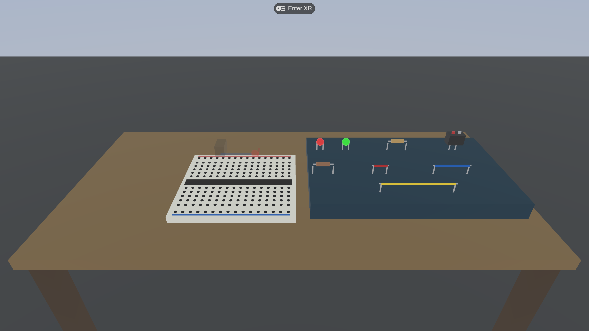
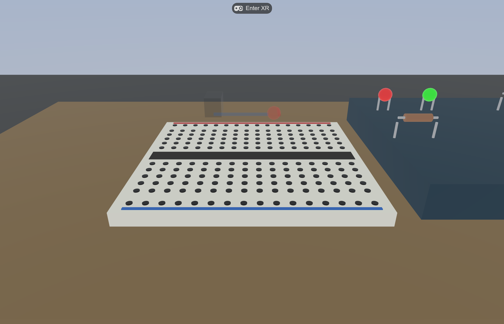
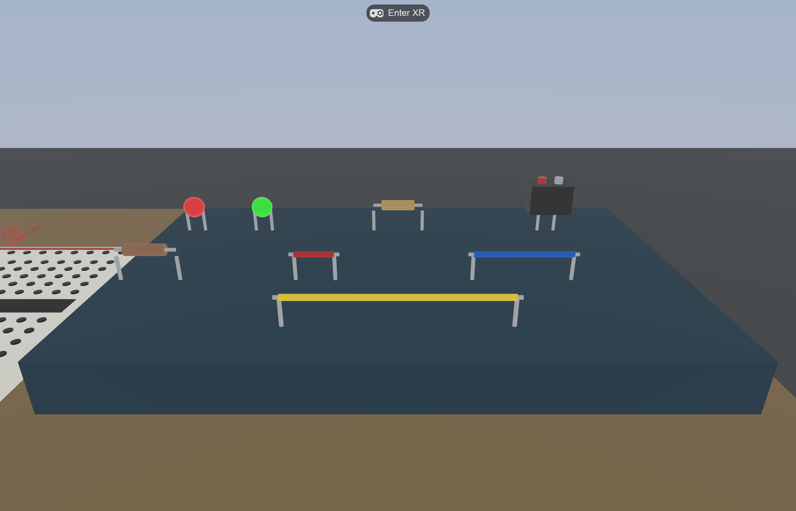
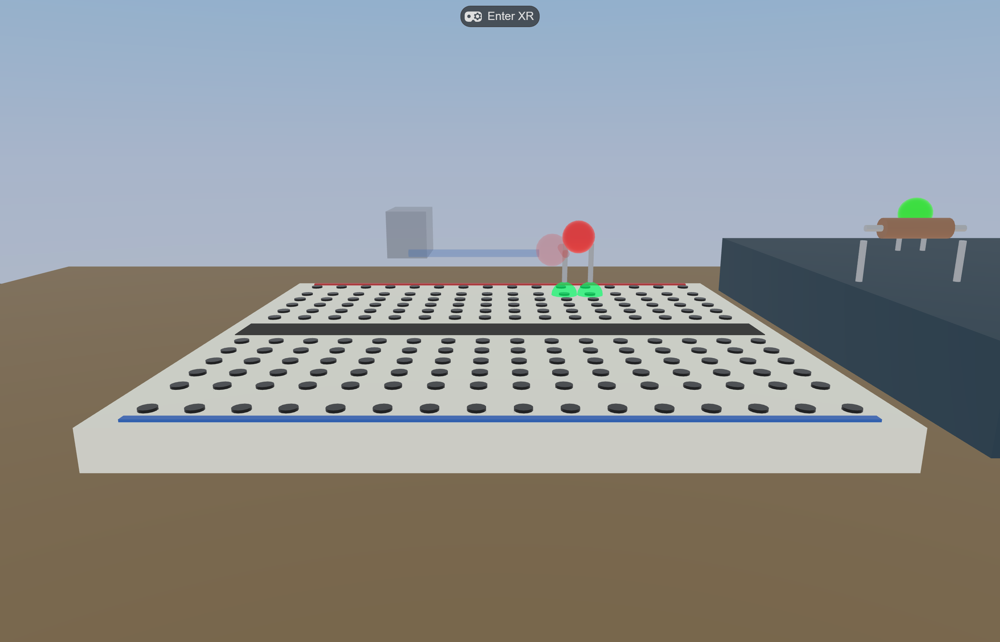
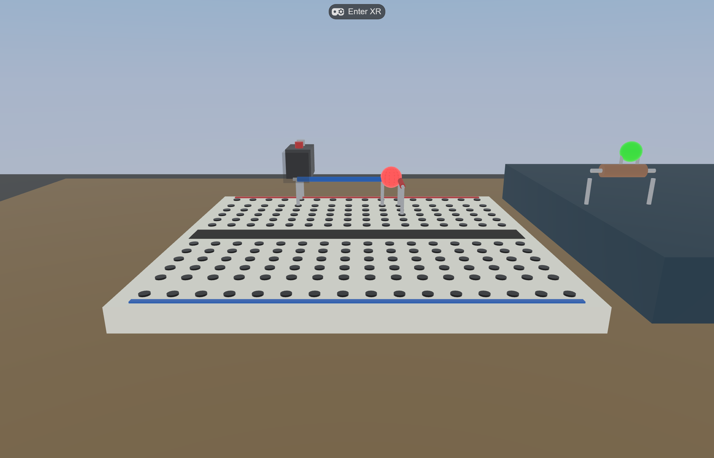
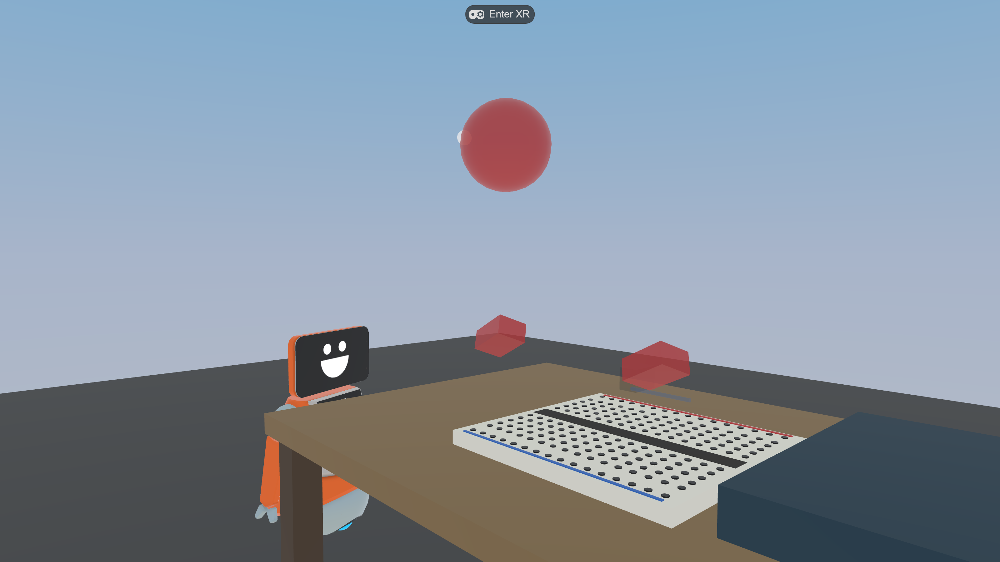
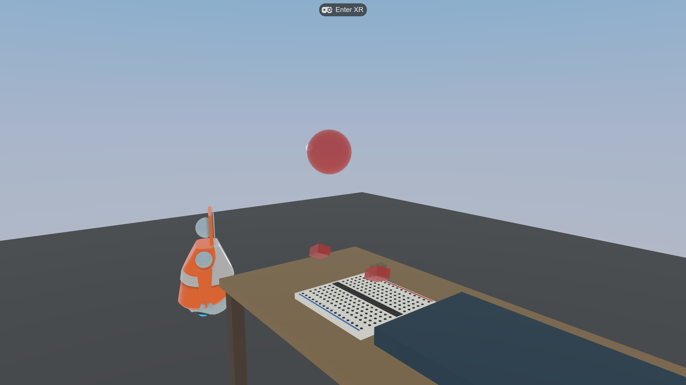

0. What you will build
The goal is to assemble a closed circuit on the breadboard, current flows from the battery, through the LED, and back to the battery, so the LED lights up.

1. Before you start
- Turn on your Meta Quest headset and open the Meta Quest Browser.
-
Go to the deployment URL:
https://virtual-makerspace.pages.dev- Solo practice:
…/?mode=solo - With a research identifier:
…/?mode=solo&pid=<participantID>&cond=<condition>
- Solo practice:
- When the page loads, gaze at (or click with your controller) the
Enter XRbutton at the top of the screen.

Enter XR starts the immersive VR session. Your two controllers (or tracked hands) appear in front of the workbench.2. Touring the workspace
The breadboard

The parts tray

If you look around the bench you will see a small robot character wandering. It is ambient flavor and is not interactive.
3. Building the circuit (solo)
3-1. Pick up a part
- Controller: point at the part and pull the trigger to grab it (you can grab from a distance).
- Hand tracking: move your hand near the part and make a grab gesture.
3-2. Line it up with the sockets

3-3. Connect in order
- Place the battery on the board.
- Run a jumper wire from the battery (+) toward the LED.
- Insert the LED (mind the polarity).
- Use the second wire to return from the LED to the battery (−), closing the loop.

3-4. Done: the LED lights up

4. Controls at a glance
| Action | Controller | Hand tracking |
|---|---|---|
| Grab a part | Aim + pull trigger | Touch the part and grab |
| Release / place | Release the trigger | Open your hand |
| Move (teleport) | Thumbstick | — |
| Toggle guides (desktop) | G | G |
5. Collaborative mode (two people)
In collaborative mode two people build one circuit at the same bench. The parts are split in two, so neither person can finish the circuit alone and you have to cooperate.
- Role A (power): battery + blue jumper wire
- Role B (load): LED + red jumper wire
5-1. Join the same room
Both people open the same room code with different roles:
Role A: https://virtual-makerspace.pages.dev/?mode=collab&role=A&room=demo1&pid=alice&nick=Alice Role B: https://virtual-makerspace.pages.dev/?mode=collab&role=B&room=demo1&pid=bob&nick=Bob
Only the room value needs to match (use any code in place of demo1). pid is the participant identifier and nick is the display name.
5-2. Seeing your partner


5-3. Build together
- Confirm out loud what each of you is holding (when voice is enabled).
- Role A places the battery and blue wire; Role B places the LED and red wire.
- When both partners' parts are correctly connected, the LED lights up. Completion is a joint achievement.
6. Notes for researchers
- Session mode / condition are controlled by URL parameters:
mode=solo|collab,role=A|B,room=<code>,pid=<participantID>,nick=<name>,cond=<condition>. - Telemetry: grabs/placements/circuit changes plus, in collaborative mode, CPS signals (joint gaze, partner orient, handoff, turn-take) are recorded against the PISA 2015 12-cell framework. Events accumulate in browser IndexedDB and export as NDJSON at session end.
- Analysis:
python scripts/analyze_session.py <export.ndjson>prints validation + a session summary + a CPS timeline + a PISA 12-cell tally. - Architecture, deployment, and voice setup: see docs/phase2-cps.md.
7. Troubleshooting
| Symptom | Fix |
|---|---|
No Enter XR button | Confirm the URL is HTTPS and you are in the Quest Browser. Reload the page. |
| Can't grab a part | Make sure the pointer is aimed at the part. If it is too far, teleport closer. |
| LED won't light after placing | Check that all four parts are connected and the loop is closed. Pick a part back up to adjust its position. |
| Partner not visible in collab | Confirm both people use the same room code and different role values. |
| Scene feels heavy / slow | Close other browser tabs and apps, then reload. (The physics engine is disabled, so memory pressure is low.) |